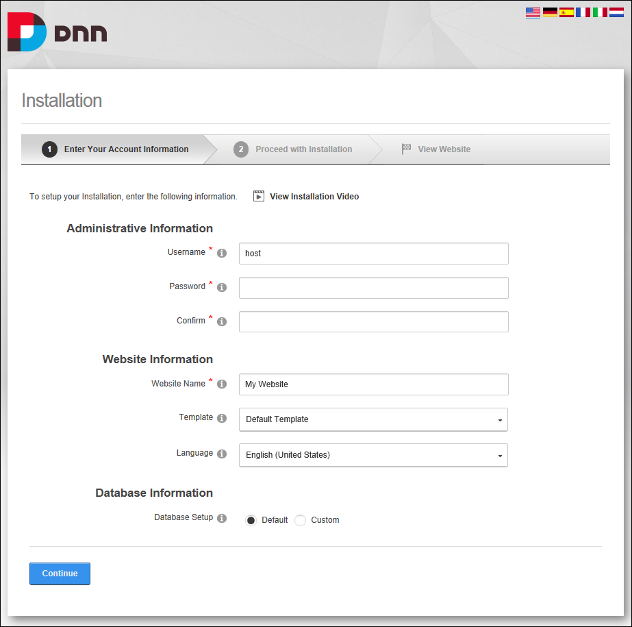

About the Installation Wizard
The Installation Wizard provides a simple three step process for installing DNN and creating your first DNN website. The DNN Installation Wizard displays a single form where you can enter a username and password for the SuperUser account, select a template for the first site and then either select the default database setup or setup custom database options. Once the installer opens in your web browser, it will auto-detect the language set on your web browser and switch to that language. If the language isn't part of DNN Installer pack then installer will default to English. If you wish to install your site in a different language click the flag of the language you wish to use. This will change the language used in the wizard and will also create the site's default content in that language. The new sites management tools will also show in the chosen language once the site is installed.
You can use different templates by adding your template to the Portals/_default folder, See "Creating a Custom Installation Setup"

The DNN Installation Wizard